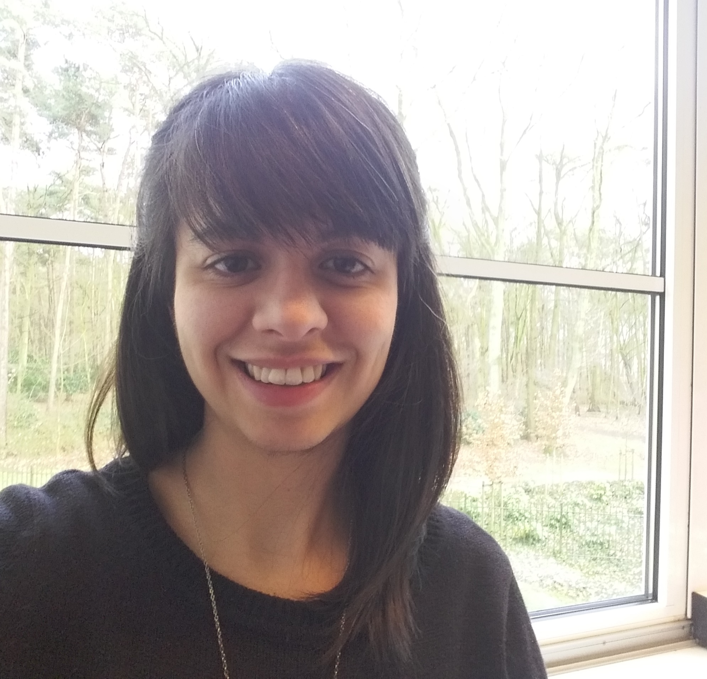

I am interested in understanding how cultural evolutionary processes interact with learning preferences to shape language in development and evolution. My
previous research has used experimental methods looking at gestural communication to understand the effects of interaction and transmission in the evolution of language,
drawing motivation from cases of natural sign language emergence. In addition, I am interested in testing modality effects in emerging sign systems (e.g. iconicity), and what such effects tell us about the evolution of language and cognition.
I completed my PhD in the Centre for Language Evolution at the University of Edinburgh, supervised by Simon Kirby, Kenny Smith and Marieke Schouwstra. During my PhD, I developed Artificial Sign Language Learning methodologies to investigate cultural evolution in manual communication systems.
Following my PhD, I worked in Nijmegen as an affiliated researcher with the Max Planck Institute for Psycholinguistics, where I explored measures of iconicity in evolving signal systems.
I am currently a postdoc in the Language and Cognition Lab at UCL, where I am working with Gabriella Vigliocco, investigating the role of iconicity in child language development.